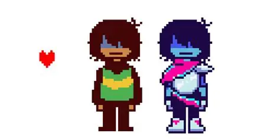

Kris

Introdução
Kris é o protagonista de Deltarune e o personagem controlado principalmente pelo jogador. Kris é um humano que vive na cidade onde a história acontece e mora com sua mãe, Toriel. Na escola, Kris estuda com personagens como Susie, Noelle e Berdly.
Aparência
Kris possui uma aparência bastante característica, com cabelos escuros cobrindo parte do rosto e roupas predominantemente verdes e amarelas. Apesar de ser o protagonista, Kris raramente fala diretamente, permitindo que o jogador interprete suas ações e escolhas.
Personalidade
A personalidade de Kris é misteriosa. O personagem pode parecer tranquilo e reservado, mas também demonstra humor e comportamentos próprios em determinadas situações. Um dos elementos mais importantes da história é a relação entre Kris e o jogador, já que o controle exercido pelo jogador sobre o personagem é mostrado de maneira diferente de outros RPGs.
Historia
No Capítulo 1, Kris entra em um Dark World junto com Susie e conhece Ralsei. A partir desse momento, começa sua jornada pelos mundos sombrios.
No Capítulo 2, Kris continua sua aventura ao lado de Susie e Ralsei e acaba envolvido no Cyber World. Nesse capítulo, sua relação com Noelle também ganha maior importância.
Relações
- Susie: uma das principais companheiras de Kris e uma das pessoas com quem mais interage durante as aventuras.
- Ralsei: companheiro de Kris nos Dark Worlds e uma importante fonte de informações.
- Noelle: colega de escola que possui uma relação próxima com Kris.
- Toriel: mãe de Kris e uma das pessoas mais importantes em sua vida.
- Asgore: pai de Noelle e figura relacionada à família de Kris por meio de Toriel.
Habilidades
- Espada: utiliza uma espada como principal arma.
- Defesa: consegue bloquear ou reduzir danos durante as batalhas.
- Magia: pode utilizar algumas habilidades mágicas dependendo da situação.
- Comandos de ACT: pode interagir com inimigos de diferentes maneiras durante as batalhas.
- Determinação: demonstra grande resistência e capacidade de continuar a aventura mesmo diante de situações perigosas.
- Controle da alma: possui uma relação especial com a SOUL controlada pelo jogador.
Participações
- Capítulo 1: entra no primeiro Dark World com Susie e conhece Ralsei.
- Capítulo 2: participa da aventura no Cyber World e interage com Noelle, Berdly e Queen.
- Capítulo 3: continua envolvido nos acontecimentos do novo Dark World.
- Capítulo 4: continua sua jornada pelos Dark Worlds.
- Capítulo 5: permanece como protagonista e continua envolvido nos mistérios das Dark Fountains.
Curiosidades
- Kris é o personagem controlado principalmente pelo jogador.
- Kris não possui diálogos falados como os outros personagens.
- A relação entre Kris e o jogador é um dos maiores mistérios de Deltarune.
- Kris é humano, enquanto muitos dos personagens encontrados nos Dark Worlds são Darkners.
- Kris utiliza uma espada durante as batalhas.